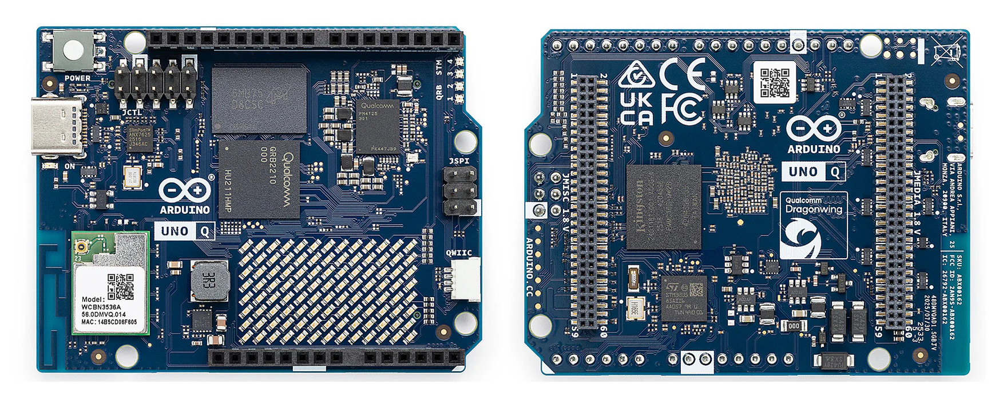
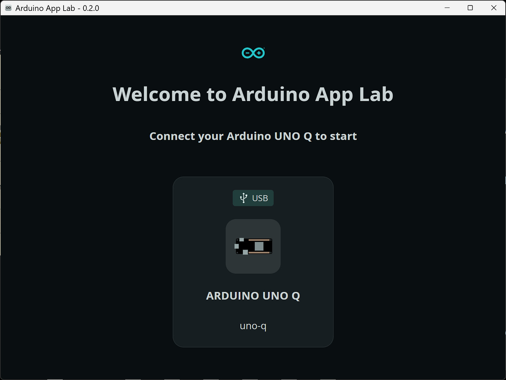
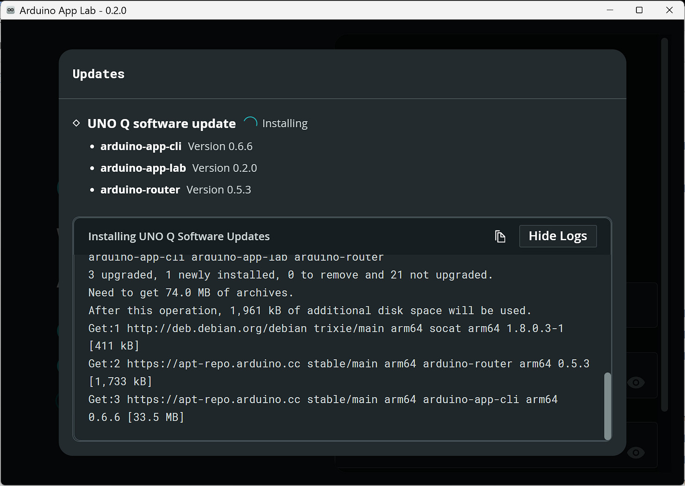
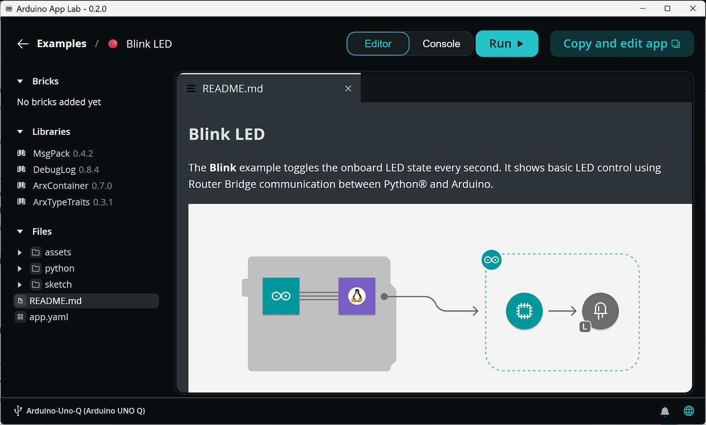

ทำความรู้จักบอร์ด Arduino Uno Q: MPU + MCU#
▷ Arduino Uno Q#
บอร์ด Arduino UNO Q ได้เปิดตัวในช่วงต้นเดือนตุลาคม พ.ศ. 2568 ซึ่งเป็นช่วงเวลาเดียวกับข่าวการเข้าซื้อกิจการของบริษัท Arduino.cc โดยบริษัท Qualcomm Technologies, Inc.
บอร์ด Arduino Uno Q มาพร้อมหน่วยประมวลผลหลักสองประเภท ได้แก่
- MPU: Qualcomm Dragonwing QRB2210 (Quad-core 64-bit ARM Cortex-A53, 2.0GHz)
- MCU: STMicroelectronics STM32U585 (32-bit ARM Cortex-M33, up to 160 MHz, 2Mbyte Flash, 786KB RAM)
ดังนั้นจึงกล่าวได้ว่า Uno Q เป็นบอร์ด SBC (Single-Board Computer) รองรับระบบปฏิบัติ Debian Linux และมีชิปไมโครคอนโทรลเลอร์รวมอยู่ด้วยบนบอร์ด MCU สามารถทำงานอิสระ หรือร่วมกับ MPU สำหรับงานควบคุมเรียลไทม์ (Real-time Tasks and Peripheral control) หรือ เชื่อมต่อกับวงจรหรือโมดูลเซ็นเซอร์ประเภทต่าง ๆ
หากเปรียบเทียบกับบอร์ด SBC เช่น Raspberry Pi (RPi) 4B / RPi 5 โดยทั่วไปมีเฉพาะ MPU (โปรเซสเซอร์หลัก) สำหรับรันระบบ Linux แต่ไม่มี MCU อยู่บนบอร์ด

รูป: บอร์ด Arduino Uno Q (Source: arduino.cc)
Board Variants#
บอร์ด Uno Q มีขนาด (Form Factor) เหมือนกับ Arduino Uno และมีให้เลือก 2 รุ่น ซึ่งแตกต่างกันที่ความจุของหน่วยความจำ RAM (LPDDR4) และ eMMC (ดังนั้นจึงมีราคาแตกต่างกัน)
- 2GB RAM / 16GB eMMC
- 4GB RAM / 32GB eMMC
Operation Modes#
การทำงานของบอร์ด Arduino Uno Q มี 3 รูปแบบ คือ
- PC-connected via USB Type-C:
- เชื่อมต่อบอร์ด Uno Q กับคอมพิวเตอร์ของผู้ใช้ ผ่านพอร์ต USB Type-C
- ใช้ซอฟต์แวร์ Arduino App Lab บนคอมพิวเตอร์ เพื่อเขียนโค้ดและรันโปรแกรมต่าง ๆ เพื่อพัฒนาและอัปโหลดโค้ดไปยัง MCU (STM32U585) หรือ MPU (QRB2210)
- Standalone:
- Uno Q ทำงานเป็นคอมพิวเตอร์แบบ SBC (Standalone Linux System)
- ต้องใช้ร่วมกับอุปกรณ์ USB-C Hub/Dongle ที่รองรับ Power Delivery (PD) และ DisplayPort Alt Mode และสามารถต่อ HDMI Display, USB Keyboard, USB Mouse ได้เหมือน Desktop PC
- Network Mode / Remote Access via Wi-Fi:
- เชื่อมต่อผ่าน Wi-Fi และเชื่อมต่อกับบอร์ด Uno Q แบบเครือข่าย และด้วยวิธี Remote SSH จากคอมพิวเตอร์ของผู้ใช้
ข้อสังเกต:
- ใช้ Arduino App Lab ใช้ในการพัฒนาและรันโค้ดบน MPU / MCU ในโหมด "PC‑Connected Mode" (รวมถึงการรันโค้ดบนบอร์ด โดยตรงในโหมด Standalone)
- บอร์ด Uno-Q ไม่มี MicroSD Slot แต่ใช้ชิป eMMC storage สำหรับการทำงานของ Debian Linux
- ไม่มีพอร์ต RJ45 สำหรับ Ethernet / LAN แต่มีโมดูล WCBN3536A (Qualcomm QCA6174A chipset, WiFi 5 dual-band & Bluetooth 5.1) เชื่อมต่อไร้สายกับระบบเครือข่ายได้
- บอร์ดใช้แรงดันไฟเลี้ยงได้ 2 วิธี
- ใช้พอร์ต USB Type-C
- ต่อเข้าที่ขา VIN (7–24 VDC) และ GND ของบอร์ด
- ไม่มีพอร์ต HDMI โดยตรง
- มีพอร์ต USB Type-C เพียงพอร์ตเดียว ใช้สำหรับการจ่ายไฟเลี้ยงให้บอร์ด รวมถึงการเชื่อมต่อข้อมูล แต่ต้องใช้อุปกรณ์เสริมคือ USB Type-C Adapter / Dongle) ที่รองรับ USB-C Power Delivery (PD) สำหรับการจ่ายไฟ จึงจะต่ออุปกรณ์เสริมได้
- แรงดัน I/O สำหรับ QRB2210 (MPU) คือ +1.8V แต่สำหรับ STM32U585 (MCU) คือ +3.3V ดังนั้นจึงต้องมีวงจรแปลงระดับแรงดัน (Bi-directional Level Shifter / Level Translator) เช่น ไอซี TI TXB0104 สำหรับสัญญาณไฟฟ้าที่เชื่อมต่อระหว่าง MPU-MCU
- มีวงจร 13x8 LED Matrix คล้ายกับบอร์ด Uno R4 WiFi
- มีคอนเนกเตอร์ขนาด 2x30 พิน (Female Pins) ใต้บอร์ด ได้แก่
JMEDIAสำหรับการต่อวงจรหรืออุปกรณ์เสริม High-speed camera & display interfaces (MIPI CSI/DSI) และJMISCสำหรับอุปกรณ์ประเภทอื่น (1.8V GPIO, SDIO, Audio)
Zephyr-based Arduino Core#
การเขียนโปรแกรมสำหรับชิป STM32U585 ใช้ Arduino Zephyr Core เป็นพื้นฐาน โดยทำงานบน Zephyr RTOS ซึ่งเป็นระบบปฏิบัติการเวลาจริง (Real-Time Operating System) ทั้งนี้ Arduino.cc ได้ปรับมาใช้ Zephyr RTOS แทน Arm Mbed OS สำหรับบอร์ดที่ใช้ไมโครคอนโทรลเลอร์ตระกูล Arm Cortex-M series เช่น บอร์ด Arduino Portenta H7 และ Portenta C33
ซอฟต์แวร์ที่เกี่ยวข้องกับ Arduino Uno Q#
- Arduino Flasher CLI
- ใช้สำหรับดาวน์โหลดและแฟลช Debian Linux Image (ลงชิป eMMC) บนบอร์ด Uno Q โดยเฉพาะ
- Arduino App Lab (GUI)
- เป็นซอฟต์แวร์ IDE แบบกราฟิกที่รองรับการพัฒนาโปรแกรมบน Uno Q (Arduino Sketches, Python, Bricks, Docker-based Apps)
- Arduino App Lab CLI
- เป็นซอฟต์แวร์ที่ทำงานแบบ CLI (Command Line Interface) ที่ทำงานบน MPU (Debian / Uno Q) และเป็น Back-end ให้กับการทำงานของ Arduino App Lab (GUI)
- Arduino CLI
- เป็นซอฟต์แวร์ Back-end ให้กับการทำงานของ Arduino IDE / Arduino App Lab สำหรับคอมไพล์ / อัปโหลด Sketches และจัดการบอร์ด/ไลบรารี เป็นต้น
- Arduino Bridge / RPC Library
- เป็นไลบรารีสำหรับการเชื่อมต่อข้อมูลระหว่าง MPU-MCU ด้วยวิธีที่เรียกว่า "Remote Procedure Call (RPC)" (ทาง Arduino.cc เรียกว่า "Bridge" เพื่อให้ฝั่ง MPU สามารถเรียกฟังก์ชัน MCU และกลับกันได้) ทำงานตามสถาปัตยกรรม Client / Server
- ใช้ไลบรารี Arduino RPClite และ ไลบรารี MessagePack RPC Router เป็นพื้นฐานในการทำงาน
- ข้อมูลจะถูกส่งตามรูปแบบของ MessagePack-RPC Serialization
- Arduino remoteocd
- เป็นซอฟต์แวร์ (เขียนโค้ดด้วยภาษา Go) ทำหน้าที่จัดการการแฟลชเฟิร์มแวร์ (Firmware Flashing) ให้กับไมโครคอนโทรลเลอร์ STM32U585 โดยเรียกใช้โปรแกรม OpenOCD ซึ่งช่วยให้สามารถแฟลชได้จากหลายโหมด เช่น โดยตรงจาก MPU / Linux, จากคอมพิวเตอร์ผู้ใช้ผ่าน ADB over USB หรือผ่าน SSH จากคอมพิวเตอร์ระยะไกล
- ใช้ควบคู่กับ Arduino CLI เมื่ออัปโหลดโค้ดไปยัง MCU ของ Uno Q
Arduino Apps & Bricks#
- บนบอร์ด Arduino Uno Q การทำงานของแอปพลิเคชันจะอยู่ภายใน Docker Container ซึ่งรวมซอฟต์แวร์หลักสองส่วน
- Arduino Sketch ที่รันบน MCU (STM32U585)
-
Python Code ที่รันบน MPU (QRB2210 Linux)
ทั้งสองส่วนสื่อสารกันผ่านระบบ RPC (MessagePack) เพื่อให้โค้ดบน MCU และ MPU ทำงานร่วมกันได้อย่างราบรื่น -
Arduino Bricks คือ หน่วยซอฟต์แวร์แบบโมดูลาร์ (Modular Software Component) ที่ถูกกำหนดโครงสร้างและรูปแบบการจัดการโดย Arduino
Bricks ถูกออกแบบมาให้ใช้งานได้ทันที โดยเน้นด้าน AI / Machine Learning และงานเชื่อมต่อระบบ เช่น - Face Recognition / Machine Vision
- Audio / Sound Recognition
- Cloud / Data Storage
- ไลบรารีหลักสำหรับ Bricks →
app-bricks-py -
ตัวอย่างการใช้งาน Bricks →
app-bricks-examples -
ภายใน App Lab แต่ละ Brick จะมีไฟล์กำหนดค่ารูปแบบ YAML และโค้ด Python / Sketch ที่พร้อมใช้งานภายใน Docker Container บน Uno Q
ผู้ใช้สามารถนำ Bricks เหล่านี้มาผสานเข้ากับ App ได้โดยตรง ทั้งผ่าน App Lab GUI หรือ CLI
ตัวอย่างการทำคำสั่งบน MPU
- การทำคำสั่ง
arduino-cliสำหรับคอมไพล์ Arduino Sketch และอัปโหลดไปยัง STM32U585 MCU (ใช้งานผ่านremoteocd)arduino-cli compile -b arduino:zephyr:unoqarduino-cli upload -p /dev/ttyACM0 -b arduino:zephyr:unoq
ตัวอย่าง Background Services ที่เกี่ยวข้องกับ Uno Q ทำงานอยู่บน MPU
arduino-app-cli- ไม่ได้เป็นเพียงแค่คำสั่งแบบ CLI (
/usr/bin/arduino-app-cli) แต่ยังทำหน้าที่เป็นบริการ (Daemon) ที่เป็นศูนย์กลางการจัดการสำหรับแอปพลิเคชัน (Apps) บนบอร์ด Uno Q เช่น การเริ่ม / หยุด หรือ ดูสถานะการทำงานของ Uno Q App (โดยทั่วไปประกอบด้วยสองส่วนคือ Arduino Sketch และ Python Code ซึ่งทำงานด้วย Docker Container) - เปิด พอร์ต TCP หมายเลข
8800ที่อนุญาตให้ส่วนต่อประสานผู้ใช้ (เช่น Arduino App Lab) หรือเครื่องมืออื่นๆ สามารถเชื่อมต่อและ สื่อสารกับ Daemon เพื่อสั่งงาน
- ไม่ได้เป็นเพียงแค่คำสั่งแบบ CLI (
arduino-router- เปิดใช้งาน Unix Socket เพื่อให้โปรเซสอื่นสามารถสื่อสารและรับส่งข้อมูลได้
- เปิดใช้งานพอร์ต
/dev/ttyHS1(High Speed UART, Baudrate=115200) เพื่อเชื่อมต่อกับ Hardware Serial ไปยัง STM32 MCU
arduino-router-serial- ใช้สื่อสารจากคอมพิวเตอร์ผู้ใช้ ด้วยพอร์ต USB (USB Gadget Serial port) ในรูปแบบพอร์ตอนุกรม
- เรียกใช้โปรแกรม
socatเพื่อเชื่อมต่ออุปกรณ์อนุกรม พอร์ต/dev/ttyGS0(Baudrate=9600) เข้ากับพอร์ต TCP/IP (เช่น7500)
adbd(/usr/lib/android-sdk/platform-tools/adbd)- เป็น Android Debug Bridge daemon ใช้ติดต่อกับ
remoteocdด้วยโพรโทคอล ADB (Remote Developer/Debugging Interface) - ทำให้ ADB client เชื่อมต่อจากคอมพิวเตอร์ผู้ใช้เข้ามายัง MPU ได้ (ผ่าน USB หรือ TCP/IP)
- เป็น Android Debug Bridge daemon ใช้ติดต่อกับ

รูป: ตัวอย่างการเชื่อมต่อไปยังบอร์ด Uno Q จากคอมพิวเตอร์ผู้ใช้ด้วย Arduino App Lab ผ่านพอร์ต USB Type-C

รูป: การอัปเดตโปรแกรมต่าง ๆ บน MPU ของ Uno Q ผ่านทาง Arduino App Lab

รูป: ตัวอย่าง App (Blink LED) เป็น Self-contained Example ของ Uno Q ผู้ใช้สามารถทดลองรันได้ ผ่านทาง Arduino App Lab

รูป: ตัวอย่างโค้ด Sketch และ Python สำหรับ Blink LED App
This work is licensed under a Creative Commons Attribution-ShareAlike 4.0 International License.
Created: 2025-11-12 | Last Updated: 2025-11-12